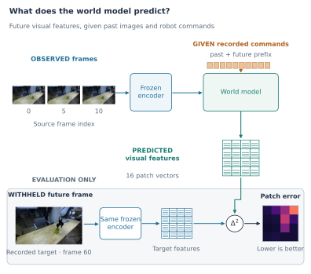
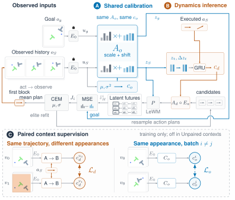

What changed?
Learning observation and dynamics contexts
for compact world models.
Separate what the camera sees from how the world responds.
Explore prediction and planning across simulation and everyday robot experience.
Three-seed means on the stated forecast comparisons. Explore all settings and uncertainty.
See the difference.
Explore action-conditioned prediction across controlled simulation and robot experience.
Saved simulator observations after each action block. Every frame carries its actual native call; a stopped rollout holds its last image. Playback advances through recorded observations.
These selected development examples illustrate different outcomes under the same goal, initial state and planning budget. They are separate from the held-out forecasting averages above. Selection protocol and complete outcome inventory · Frame provenance.
Given these commands, what will the robot see next?
Three observed frames and a recorded command sequence go into the world model. It forecasts the visual features of future frames. We score the forecast against features of the actual later recording.
- ObserveThree recorded frames
- ConditionThe supplied robot commands
- PredictFuture visual feature grids
- CompareWithheld future-frame features
RGB footage below shows the recorded interaction. Model outputs appear as feature-error curves and maps; future RGB images are reference observations. Lower feature error means a closer forecast. Physical robot-control success is a separate evaluation.
{kind=link}

- 1,126
- recorded episodes
- 433
- recording sessions
- 12
- trained predictors
- 48
- completed evaluations
DROID by Khazatsky et al. · Dataset & authors · CC BY 4.0 · Clip provenance. Original face blurring is retained. This deterministic data example was selected before model-result review.
Run a forecast.
Load the released models and compare ShiftWM with Framewise on the same recorded robot sequence.
Choose a recording, camera and horizon. The demo recomputes predictions from the checkpoint and displays feature-error curves alongside the recorded frames.
Run the inference appOpen the inference demo in a new tab · Hosted research preview; cold starts may take a moment.
The downloadable app runs genuine CPU inference with the released checkpoints. The examples below remain available as a fully reproducible result explorer.
One idea. Multiple worlds.
Compare every measured baseline in each setting. Choose the benchmark and evaluation condition to follow the gains and the remaining challenges.
| Method | Mean | Seed SD |
|---|
Three training seeds for learned adaptations; the frozen backbone has one checkpoint. Gains are ratios of seed means, not significance tests. These feature-space forecasting errors are separate from goal-reaching success rates and use a different feature reference from the DROID study. All planning results are reported in the paper.
See what improves, what changes little, and what still fails

Original prespecified DROID study
| Method | Mean | Seed SD |
|---|
Three training seeds; equal episode weight after averaging its windows. Intervals resample sessions and seeds together (10,000 draws), without multiple-comparison correction. Green marks a positive point estimate; the interval indicates uncertainty. The two camera views share recordings.
Evaluation details and long-horizon behavior
The primary five-block comparison improves 2.94% over persistence and 0.20% over Framewise. The Framewise interval includes zero. At ten blocks, error is 1.91% and 1.24% higher than Framewise on cameras 1 and 2. Improving long-horizon robustness is an active direction.
The fixed subset contains 851 training, 143 validation and 132 test episodes with disjoint recording sessions. It is a prespecified DROID subset study; object/scene disjointness and physical policy performance were not evaluated.
Complete interpretation
Two contexts.
One predictor.
Appearance changes and dynamics changes need different evidence.
Observation context
Use past visual features to calibrate what the model sees.
Dynamics context
Use calibrated history and executed actions to condition future predictions.
The simulator study uses paired canonical training targets. The DROID variant combines a frozen DINOv2 encoder with recorded-action blocks. Both condition prediction on past support, while future target images remain reserved for supervision and evaluation.

Build on ShiftWM.
Open code, reusable checkpoints and complete evaluation tools. Go from recorded observations to your own world-model forecasts.
- Source code on GitHub ↗
- Download models · real-droid-v1 ↗
- 36 development models · generalization-v1 ↗
- 42 simulation models · simulator-development-v1 ↗
- 12 ten-step models · horizon10-development-v1 ↗
- 15 spatial models · spatial-world-models-v1 ↗
- Model inference app ↗
- Current manuscript PDF
- Reproduce the experiments ↗
git clone https://github.com/aj-das-research/WM-ICLR.git117 predictors. Ready to reuse.
Five public releases provide 75 recorded-video predictors and 42 simulation predictors, with encoder weights, model cards and twelve original residual-calibration wrappers. They cover training interventions, two simulator domains, two predictor families and matched controls. Every predictor passed an isolated offline reload check with exact forecast agreement. These models output visual features for forecasting and downstream research; their complete comparisons include both gains and regressions.
Checkpoint metadata, preprocessing, model cards and verification hashes travel with the release. Calibration is a separate train-fitted development control; the headline held-out numbers above use the original predictors.
Built on LeWorldModel, DINOv2, DROID and Stable Worldmodel. Research spans controlled simulation and recorded robot video. Baseline names above describe the exact implementations evaluated in the paper.